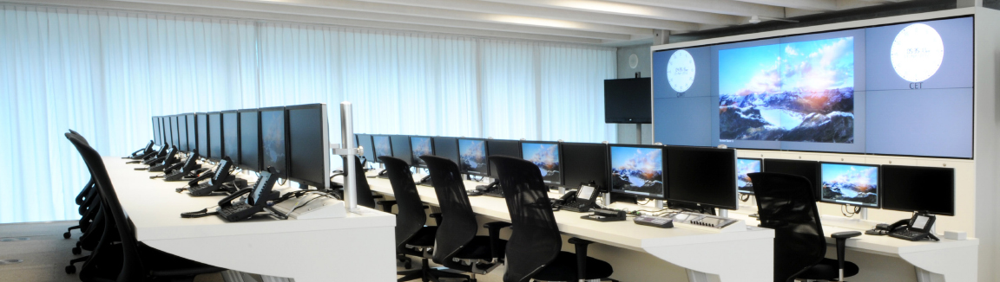

Interest in IT
Why am I interest in IT? When did it start?
It took me quite a while to figure this out, to find the exact origin of why I got into IT. I believe it was early nokia phones, I used to fight for them from my parents to play games on it. Because back then, it was cooler and more fun to digital games than actual physical games or toys (imo). I finally got my first android smartphone when I was around 15, and I had an unhealthy obsession with specs back then. So I rooted my phone and I used to overclock my cpu so I get better perfomance. Later I found it voids warranty and I stopped doing that. Anyway, from that I learned to install new roms and I learned that I like to customise my device to the point where it looks like a new phone. And this creative approach went well for me as I later got into graphic design. I never took it to the professional as its more a hobby of mine. My interest in IT is really vast, but the most simple I can put it is... Everything that has interested me (being games, films or music etc.) has always revolved around IT, and that's the industry where I want to see myself in the future. But currently, I want to further my horizon by learning how to code so I am able to create something creative and customisable by the person using it.
Was there a particular event or person that sparked my interest?
Do I have any IT experience?
The first pc that I can properly remember was my Uncle's. I remember putting in a floppy disk in the slot and it was able to store things. I was blown away. Like, this thing was able to store hundreds of pages of information.
I don't have any professional IT experience but I have experience through my personal hobby and univerity. I know a few programming languages such Java, C++, Matlab, Javascript etc. And, also a amateur at photo editing, graphic designing and video editing (currently getting into producing music).
Why did you choose to come to RMIT?
I chose RMIT because it has IT in its name.
Jokes, jokes. I always wanted to live and study in the city and that's why RMIT is the perfect choice for me. And its also ranked in the top 250 universities in the world.
RMIT has a great reputation in the IT industry and I felt that its the perfect place to broaden my skills for the future. I’ve loved the hands-on approach to studies rather than theory as I feel that its preparing me for the real world IT industry.
What do you expect to learn during your studies?
I feel that RMIT will teach and try develop knowledge and skills essential for the IT industry to become a software developer. To become this, we have to be taught range of different applications. An important application is programming, this including coding for solutions and problem solving. Another is Business, as the IT industry is relevant to the business industry. Clouding computing is also important to understand as you're able to run and store data on the go. RMIT will go into detail and variety of cloud computing systems, such as google. IT could also be found in the small platform, such mobile. So, mobile computing will also be taught, such as communication, information exchange, and discover the potential for mobile technology. IT has also has a huge influence on Social media, and RMIT will explore the how people interact with social media and the algrothims of how social media personalise content to its user.
And there's many many more as we can choose electives and personalise what each student wants to do during their studies.